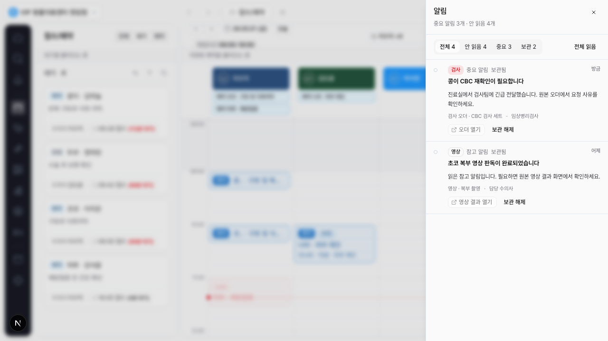

DEN-398 전역 알림 row/filter/read/archive 완료 보고서
전역 알림 drawer 안에서 알림을 행 단위로 triage할 수 있도록 read/archive/restore/all-read 상태와
기본 필터를 구현했다. badge는 여전히 전체 unread가 아니라
unread && !archived && badge_count === true 기준만 반영한다.
변경
- 알림 row에 안 읽음, 읽음, 보관됨 상태 표시를 추가했다.
- 읽음 처리, 보관, 보관 해제, 전체 읽음 액션을 세션 상태로 구현했다.
전체,안 읽음,중요,보관필터를 활성화했다.- 보관 알림은 기본 목록에서 빠지고 보관 필터에서 확인할 수 있게 했다.
- 현재 representative fixture에 v0 contract 필수 필드를 추가해 후속 DEN-400/401/402가 이어받기 쉽게 했다.
제외 범위
localStorage persistence와 역할 큐 local-first disclaimer는 DEN-399가 맡는다.
source deep-link, fallback detail, dirty-state confirmation은 DEN-404/DEN-405 범위다.
live push, service worker, provider 발송, Kakao/SMS/email, remote Supabase migration/RLS/live validation,
알림 안 final action 직접 수행은 구현하지 않았다.
검증
npm run lint통과. 기존 경고 4개는 유지된다.npx tsc --noEmit통과.PLAYWRIGHT_BASE_URL=http://127.0.0.1:3109 npx playwright test tests/app-shell.spec.ts -g "global notification"통과.- 인앱 브라우저는 로컬 URL을
ERR_BLOCKED_BY_CLIENT로 차단해 Playwright Chromium smoke screenshot으로 대체했다.

리뷰 반영
서브에이전트 리뷰에서 fixture contract mismatch와 unread filter 부재가 지적되어 이번 범위에서 반영했다. localStorage persistence, source navigation, role queue disclaimer는 각각 후속 Linear 이슈로 남겼다.